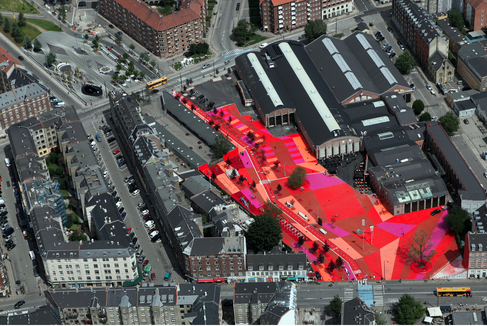

Location
Nørrebro district, Copenhagen, The Netherlands

Image source: URL
Nørrebro district, Copenhagen, The Netherlands
Image source: URL
30,000m2
Superkilen is a public park in an urban area. It is made up of 3 sections (the Red Square, the Black Market and the Green Park) that are all connected to each other in one long strip that stretches 1km long.
Image source: http://www.akdn.org/architecture/project/superkilen
Consists of bright red, orange and pink concrete floor. Used mainly for sport as the strip has basketball rings and is not car accessible.

Image source: https://realdania.dk/projekter/superkilen/nyheder/den-roede-plads-faar-ny-belaegning-i-2018_13062017
Image source: https://www.dezeen.com/2012/10/24/superkilen-park-by-big-topotek1-and-superflex/
An area visually identifiable by the strips of white lines on the concrete strip. THis is a more relaxed area filled with a large fountain and a series of benches. It is an area where people can gather to have a bbq, play chess or meet up.

Image source: http://realdania.dk/projekter/superkilen#

Image source: http://realdania.dk/projekter/superkilen#

Image source: http://realdania.dk/projekter/superkilen#
A traditional park filled with a lot of greenery and a playground.

Image source: http://realdania.dk/projekter/superkilen#

Image source: https://www.dezeen.com/2012/10/24/superkilen-park-by-big-topotek1-and-superflex/
Housing buildings are found along the strip where Superkilen is located, which can make these areas, along with their colours look separate. But like much of the inhabitants in the area, they are connected all together because they are physically in that 1km strip that is designed for only bicycles to enter.
Superkilen is close to...
Google predicts it is a 4 minute walk (300m)

Image source: Google Maps
Google predicts it is a 2 minute walk (150m)
Image source: Google Maps
Google predicts it is a 5 minute walk (400m)

Image source: Google Maps
Google predicts it is an 8 minute walk (650m). This connects to the well-known Assistens Cemetery which houses the Hans Christian Andersen's headstone

Image source: Google Maps
A popular bike path that runs through the centre of Nørrebro and briefly runs through Superkilen. The 'Green Park' is 10km long and is represented on the map as the thin green line.
Copenhagen Municipality
City of Copenhagen and Real Dania
2009-2010 by Bjarke Ingels Group (BIG), Topotek 1 and Superflex
2011
Seen as an "extreme form of public participation" as the design was dependent on the idea that its inhabitants would be open to participate in using the park. The notion that the community would participate in these 3 spaces and socially integrate and build stronger relationships in the community. During the building of Superkilen the designers "reached out to the local population inviting them to propose urban elements from their other home countries. By transformating public process into a pro-active proposition they created a park for the people by the people with peer-to-peer design" (http://revolve.media/superkilen-implementing-urban-diversity/).
The pedestrians and cyclists, it is expected to attract some 18 million visits per year.
There are a few aspects considered within the transformation of South Barangaroo:
This area is highly capitalised, targeted at high end consumers as the hotel will offer rooms to penthouse.

Image sourced: URL
"A former regeneration projects in the city’s history."